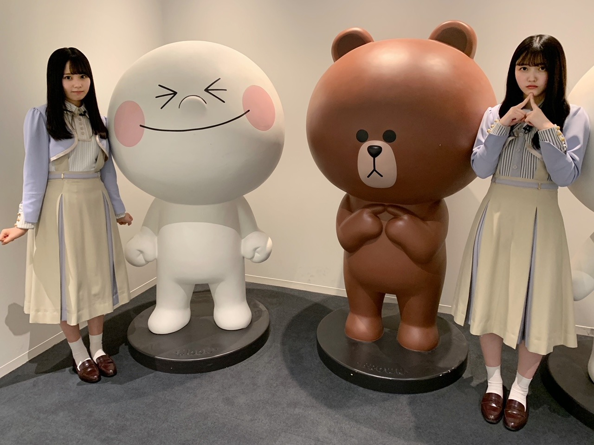
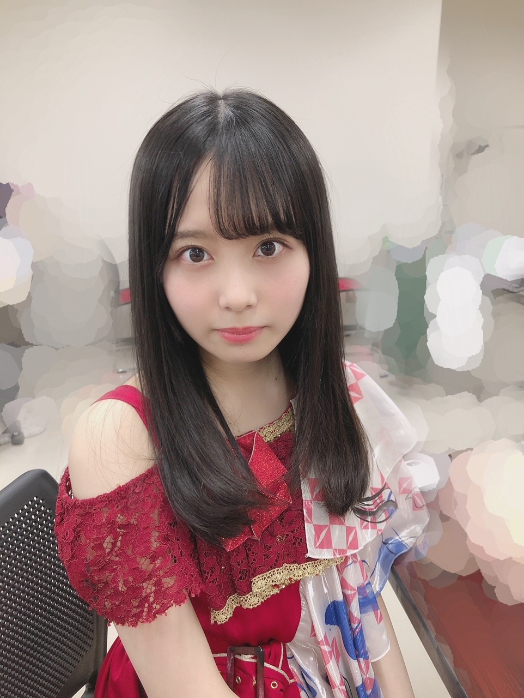
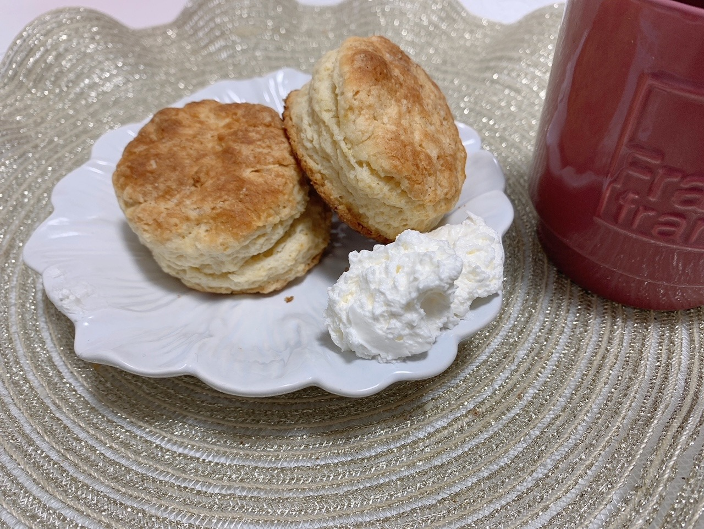
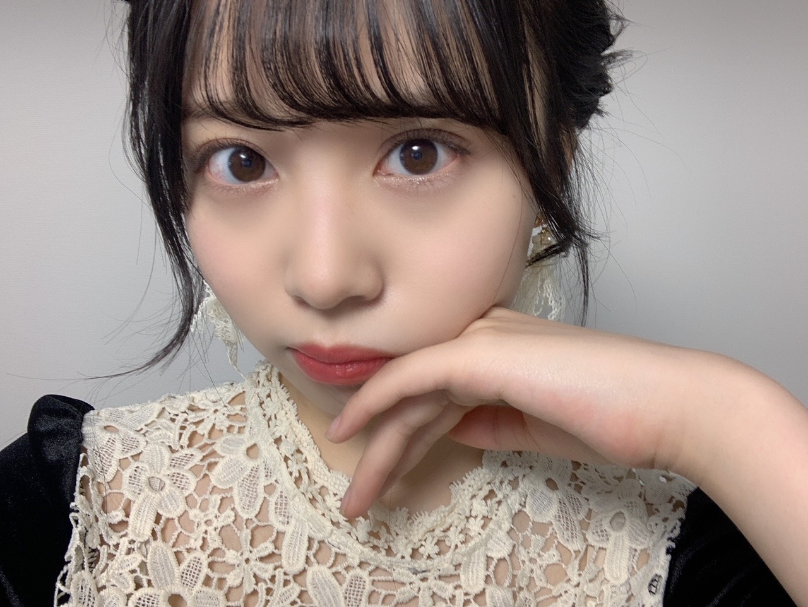

2020/1129Sun心が寒さに負けないようにと。佐藤璃果
こんにちは
乃木坂46 (新)4期生 岩手県出身
佐藤璃果です。

しおりかです！
11月27日
LINE LIVEさんの
「乃木坂46 久保史緒里の乃木坂上り坂」に
出演させて頂きました︎︎︎︎︎☺︎
ワクワクドキドキな1時間でしたね！
皆さん楽しんで頂けたでしょうか...？
番組の終わりや始まる前も
地元トークや4期生ライブの事など
沢山お話して下さって...
本当に嬉しかったです！
沢山の質問もありがとうございました。
あだ名はりっかとしおちゃんに
決まりましたが、
まだ直接はきちんとお呼びできていないので、絶対呼びたいです！
優しくお話を聞いてくれて、
ゲームも優しくて楽しくて、
盛り上げてくださって、
しおちゃんの優しさに包まれた1時間でした。
天使。
ありがとうございました。
しおりか。とても嬉しいです。
~~~~~~~~~~~~~~~~~~~
｢僕は僕を好きになる｣
ベストアーティストさんにて初披露、
私も見させて頂きました！
歌詞も、パフォーマンスも胸に響きました。
放心状態になりました。
今の私にもこれからの私にもきっと
大切な曲になるだろうなと思いました。
衣装も素敵でしたね。
キラキラしてましたね。

この間のライブの時に
なおちゃんが撮ってくれました
~~~~~~~~~~~~~~~~~~
先日、堀未央奈さんが
卒業発表をされました。
堀さんは加入したばかりの私達にも
本当にお優しくして下さって、
なんて優しいんだと思った事が
何度もあります。
同期を愛する気持ちだったり、
お仕事に対する考え方が素敵だなと思っていました。
生きる上で大事なこと、
堀さんはしっかり考えていて、
堀さんの中で紡ぎ出された言葉を
見て考える事で、救われました。
私こんな顔面で言うのもなんなのですが、
メイクやお洋服も好きなので、堀さんと少しでも話せたら嬉しいなと、、、。
堀さんの美しさ、向上心、自分を持っている強さ、ずっとずっと憧れです。
これから少しでも同じ時間を楽しく
過ごせたらと思います。
~~~~~~~~~~~~~~~~~~
11月生まれの皆さん
お誕生日おめでとうございます❁
今回はケーキっぽくない？
思考を変えてスコーンです！！

こちらは岩手県のCafe＆living Uchidaさんという素敵なカフェのスコーンの粉を使って簡単に作れちゃうんです！！
お味も美味しいんですよ~^^
上手く焼けたっ！
~~~~~~~~~~~~~~~~~~~
明日はるなぴです。
お疲れ様です！！
寒くない？
~~~~~~~~~~~~~~~~~~
皆さんにとって
素敵な1日になりますように。

スイーツ情報ありがとうございます^^*
私は今とっても生クリームを
食べたい気分なのです。
あ、そういえば、みゅちゃん(松尾)に、
生クリームっぽいって言われた気がする、
マシュマロじゃなくて生クリーム
そこ重要らしいです。(。'-')ｳﾝｳﾝ
またね。
#44 りか
2020/11/29 16:48

PROFILE
新4期生リレー
202104
| SUN | MON | TUE | WED | THU | FRI | SAT |
|---|---|---|---|---|---|---|
| 1 | 2 | 3 | ||||
| 4 | 5 | 6 | 7 | 8 | 9 | 10 |
| 11 | 12 | 13 | 14 | 15 | 16 | 17 |
| 18 | 19 | 20 | 21 | 22 | 23 | 24 |
| 25 | 26 | 27 | 28 | 29 | 30 | |

コメント(290)
もう11月も終わりだね。早かったなぁ。
そして璃果ちゃん達が加入してからもうすぐで1年だね！
僕はSHOWROOM審査の時から璃果ちゃんのこと応援してたから再会できた時はめちゃくちゃ嬉しかった！
本当に乃木坂に入ってくれてありがとう！
4期生ライブももうすぐだし楽しみがいっぱいです！楽しもうね！
質問コーナーお願いします！
Q加入から1年が経とうとしてますが、この1年での変化とかありますか？
Qこの1年での成長を実感したことはなんですか？
Q岩手のお気に入り方言教えてください！
Q受験まで後2ヶ月なので応援して欲しいです
よかったらお答えお願いします！
またコメントするね！またねー
PS.裸足でななよだ(きょうすけ)
久保ちゃんとのLINEライブ見たよー！
2人ともすごい可愛かった！！
しぃなちゃんのズッキュン最高でした！
俺も"りっか"って呼ぼうかな〜笑
ゆっちゃんより。
久保ちゃんとの同級生コンビ大好き！
ー質問ー
・呼ばれたいあだ名ってあるかな？
・皆にすすめたいもの、ことってある？
・写真集を発売するならどこで撮影したい？
・質問というかお願い！メガネをかけた姿も見てみたいな！
ありがとう！次回も楽しみにしているよ。
久保ちゃんと一緒にLINELIVEやれるなんて羨ましい〜
一緒で出たかった〜
LINELIVE観ました！しおりか素敵なコンビですね！面白かったです
覚えてるかな？？♡♡♡♡♡♡♡♡♡♡覚えててくれたら嬉しいな♡♡♡♡♡♡♡♡♡♡♡♡♡今日も世界で一番りかたんが可愛いよ♡♡♡♡♡♡♡♡♡♡♡♡♡♡♡♡♡♡♡
今日一日いい日になったかな？？♡♡♡♡♡♡♡♡
明日も頑張ろうね〜♡♡♡♡♡♡♡♡♡♡りかちゃんだいちゅきだよぉぉぉおおおお♡♡♡♡♡♡♡♡♡♡♡♡チュチュチュチュチュ〜♡♡♡♡♡♡♡♡♡♡♡♡♡♡♡♡♡♡♡♡♡♡
堀さんが卒業発表したね。凄く驚いたけどこれからの日々も大切に過ごして、これからも頑張って！！
ー質問ー
・呼ばれたいあだ名ってあるかな？
・写真集を発売するならどこで撮影したい？
・皆にすすめたいもの、ことってある？
・質問というかお願い！メガネをかけた姿も見てみたいな！
ありがとう！次回も楽しみにしているよ。
璃果ちゃんブログ更新ありがとう〜！
同じ東北出身の同級生ってほんと貴重やし、これからもっと仲良くなったりいいエピソード聞けるようになったらいいなぁ〜って思ってます笑
先輩をあだ名で呼ぶのは多少難しいかもしれんけど、頑張ってね笑
メンバーの方が卒業発表されると毎回複雑な気持ちになるんよね。
それと少しでも推しメンの方々と過ごせる時間を大切にせなあかんなって改めて考えさせられるんよねぇ。
早く璃果ちゃんと何らかの形でお話したいな〜！
マシュマロやなくて生クリーム見たいって、なんかわかるな〜笑
ふわっふわしてるイメージって感じやないかな？？
そういや今日は11月29日で「いい肉の日」って言われるけど、璃果ちゃんは焼肉で好きな部位ってどこですか？？？
自分は油っこいのは苦手やから「タン」なんよね〜
んじゃもう12月が始まるけど、こっからまた頑張っていこー
寒いから気をつけてね〜
リカちゃんなんて読んでいいかわかんないから
なんか…こう…呼び方を
行ってちょ
ナウい
りっちゃん！
やっほー！
ひろき(Yandji)です☺️
ブログ更新ありがとー！！！
質問タイムー！！！
11月の一番楽しかった思い出は何ー？
また、コメントするね！
では、またねー！
ひろき(Yandji)より
LINELIVEお疲れさまでした！
僕は途中までしか見れなかったんですけど、すごい楽しかったです！
東北ペア良かったですね笑
璃果ちゃんが初々しくて良かったです笑
ベストアーティスト僕も見ましたよ！
初披露良かったですね。
またこれまでにはないダンスで新しい感じがしましたね。
曲も詩もとても良かったです！
またゆっくり聞こう。
未央奈卒業発表したね。ほんとびっくりしちゃった。
僕らファンはまだまだ次世代のメンバーだと思ってたけど、本人はずっとずっと先を見てたんだなって思いましたね。
寂しい気持ちが強いですけど、未央奈が決めた道。その道に幸せがあることを願うばかりです。
未央奈いる間に色々お話できるといいね。あと、あなた相当顔面お綺麗ですわよ笑
乃木坂の子はみんな謙遜するね笑
璃果ちゃんにとっても素敵な1日になりますように。
またブログ更新楽しみにしてます！
(=ﾟωﾟ)ﾉﾎﾅ､ﾏﾀ!!
りかちゃん今日も１日お疲れ様です。
りかちゃん今日も可愛いです。
今日はお仕事でした。
今日は凄くバタバタで忙しかったです。
明日もお仕事です。
これからもお仕事頑張って下さい。
自分もお仕事頑張ります。
これからのブログを楽しみにしてます。
久しぶりに早めにコメント書けた〜！笑笑
「乃木坂46 久保史緒里の乃木坂上り坂」見たよ！めっちゃ可愛かったです！スクショタイムもめっちゃ可愛すぎて撮りまくりました笑笑2人とも東北出身ということで東北の話も聞くことができたし、ゲームも物凄く面白かったです！
来週の4期生ライブの話も出てたけど、思い切り楽しんで良い時間を過ごしてね！緊張もしちゃうと思うけど、緊張も吹っ飛んじゃうぐらいライブを楽しんでください！
それでは、また5日後ね！もう12月ということで、気温もだいぶ低くなって寒くなってきてるから風邪ひかないようにね！
久保ちゃんとのLINEライブ見たでー！大好きな久保ちゃんとやったから緊張したと思うけどその中でも楽しめたならよかった！
未央奈の卒業は後輩メンバーとも交流があった中で璃果ちゃんもびっくりしたと思う。残り少ない一緒に活動できる期間やからいっぱい話せるとええな
質問
回転寿司行ったら何皿くらい食べる？
朝は何時くらいに起きてる？
ノギザカスキッツでやりたいやつとかある？
LINEライブ見ましたー！！
しおりかコンビめっちゃ良かった。
2人の空気感が好き。
ほんわかしてて心が和みました。
しおちゃん呼びできたらいいね！
しおちゃんと呼ぶことができた時はぜひ報告お願いします！！
楽しみに待ってます。
僕は僕を好きになる いい歌。
人との関わりって難しいけど、この曲聴くと前向きに捉えられるような気がする。
色んな人に届くといいな。
カップリング曲はどんな感じやろ？
りかちゃん参加曲楽しみ！！
また情報解禁待ってます。
ではでは体調には気をつけて。
次のブログも待ってます。
いつもありがとう。
一気に冬が来た感じがする。朝と夜は寒すぎて辛いです...すでに朝は布団から出られない現象が起きてます笑りかちゃんも寒さ対策はしっかりして風邪ひかないように気をつけてね〜！
久保ちゃんとのトーク優しさに包まれてて観ててホッコリしました☺️
新曲も良かったよねぇ！衣装キラキラしててすごく綺麗で見てて楽しかったあの衣装璃果ちゃん似合いそう！
それとライブ衣装きた璃果ちゃんもお花のレースの服着た璃果ちゃんもめっちゃかわいい！髪型もすごく似合っててめっちゃいい☺︎
スコーンも美味しそう！何気に食べたことないから今度買って作ってみます！
冬がすぐそこまでしてる気がするしお体に気をつけてください！ずっと応援してます！また5日間待ってます！
LINELIVE途中までしか見れてなくて、あとでちゃんと見ます
最後の写真の髪型好き！
なんでも似合うってすごい！！
また色んな髪型チャレンジして見せてね！
スコーン美味しそう
食べてみたいなぁ。。
ベロアワンピースのお写真可愛すぎてううってなりました(；；)
乃木坂上り坂お疲れ様☺︎
もうすごく可愛かった！！！
幸せな時間でした(＞＜)
4期ライブまであと一週間ですね！！
私もすごく緊張してます、、ww
質問です☺︎
◎ 璃果ちゃんはずっとロングなんですか??それともショートの時代ありましたか??
◎ 小さい頃からこれがずっと好き！っていうものありますか??
◎ 最近のうっかりエピソードありますか??
◎ 璃果ちゃんの前髪の巻き方教えてほしいです(；＿；)
今日も今日とて璃果ちゃんしか勝ちません！！！
まなより
ラインライブの乃木坂上り坂、観ましたよ！
2人が楽しく話しているのが微笑ましかったです、
たまたまランキングに入ることができ名前を読み上げてもらって嬉しかったです笑
私情ですいませんw
こうやっていろんな場面で見れるようになってきて凄いと思います！応援してます♪
【マトゥ】
写真全部かわいいね
次のブログの時にどーだったから言うね！SHOWROOMでりかちゃんに応援してもらったから頑張れたよ！ありがとう！
YOSHIKI
最近は本当に寒くなってきたね
まさに冬って感じがするような寒さで、暖かい場所出身の私なんかは外に出るたびに手袋までつけています
でも岩手出身のりかちゃんは寒さには強いほうなのかな？
あと、あと1週間くらいで4期生ライブだね
私は今から楽しみに待ってるから頑張ってー
応援しています
4期生の新しい曲も聴けるといいね
じゃ、今度もまたコメントします
またね
LINELIVE見れなかった〜悔しい〜 今度はちゃんと見るね、
衣装可愛い〜超似合ってる!!
スコーン美味しそう、食べたい
質問
質問では無いですが、嬉しい事があって、褒めて欲しいです。
LINEライブの配信見ました！久保ちゃんとの掛け合いが可愛くて可愛くて…♥︎
しおりか最高でした！
体調に気をつけてこれからも頑張ってください！
応援します！大好きです\♥︎/
LINELIVEみたよ！！しおりかコンビの会話を聴いてて楽しかったです！！一瞬で時間が過ぎてしまいました！
｢僕は僕を好きになる｣歌詞が凄く身に染みてとても良い曲だなぁと思った！
未央奈が卒業発表したときしばらくなにも考えられなくなってしまいました。今でも本当に卒業するのかなぁ？って思ってるんだけどやっぱ本当に卒業しちゃうんだなって実感しました。今、未央奈がいる乃木坂46をしっかり見届けて楽しい思い出を作って卒業の時には明るく向かえられたらいいなと思いました。
出た！乃木坂46の料理上手！佐藤璃果ちゃん！！これ店に売ってる商品じゃん！！凄い！！
お皿もコップもオシャレで可愛い！！
めちゃめちゃ美味しそう！！
質問〇璃果ちゃん！スコーンを食べる時に合う飲み物は何ですか？？
〇璃果ちゃんのスイーツを作ってるのを見て自分も作りたくなったんだけど素人におすすめの簡単に作れるスイーツってある？？
璃果ちゃんいまライブのリハとかで疲れちゃうと思うけど応援してるね！今からでも本番が楽しみだ！！
璃果ちゃんにとってより良い日々になりますように！！
ゴードンでした！！！
乃木坂上り坂見たよー！しおりかかわいい！！
東北姉妹(´•᎑•`)♡はるかも東北生まれなんだー！！
生まれただけだから正確に言うと出身地ではないみたいなんだけど！（笑）
褒めるゲームかわいかったなー面白かったし( •ᴗ• )！
堀ちゃんの卒業発表見ましたㅠ_ㅠ寂しい気持ちもあるけど
残り少ない時間を少しでも多く見れたらなと思った！
りかちゃんが堀ちゃんの話をしていたのがとても印象に残っていたので、
りかちゃんどう思っているんだろうとか少し心配になりました（ ; ; ）
その黒いお洋服着てるりかちゃんはほんとに綺麗で
だいすきだなって思うしその髪型初めて見た（？）けど
めちゃくちゃかわいいなーー(T_T)(T_T)♡♡
4期ライブ本当に楽しみにしてるー！るんるん！！（笑）
5日後の更新楽しみにしてるね⸜( •ᴗ• )⸝またね！だいすき！
LINEライブリアタイで見れました〜！！
久保ちゃんとの掛け合いとか、仲良くなっていってる感じとか、ファン側もすごいたよしかったし、りかちゃんがめちゃくちゃ笑顔になってるところとか、最高でした(笑)
これからもっと深い関係になれるといいね…しおりかの今後が楽しみです…！！！
これからの乃木坂が変わるっていう時期になってきたけど、その中で新しく入ったりかちゃん達とか、4期生3期生みんなで合わさって新しい乃木坂の形とか見えてきたらいいなぁってすごく思います。卒業は寂しいことだけど、色んな人にとっての新たな1歩になることだと思うから、りかちゃんがこれからもっと乃木坂として頑張ってる姿応援したいなって思います。
ブログ更新遅くてもしっかりあげてくれたり、可愛いりかちゃんがみれたり、すごい好きになるのでこれからも変わらず楽しみにしてます！！！
質問
・この前のライブの時の衣装の写真とかあったら見てみたいです！！
・踊ってみて大変だった曲とかありますか？
・家にこたつはありましたか〜？(東北だと出れなくなりそう)
・りかちゃんが今アイドルなんだなぁって感じる瞬間はありますか？
・これから仲良くなりたい！って思ってるメンバー(先輩とかも含め)はいますか？
・りかちゃんはアニメとか映画とか何か好きなキャラクターはいますか？
・要望なんですけど、リカロットの時より高めのツインテール見てみたいです！！！
5日後をまた楽しみに待ってるね！
メリアより。
コメントする